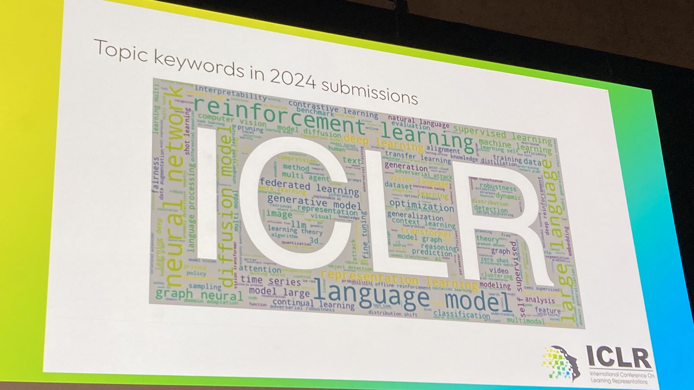

ICLR 2024 Reflections
May 2024

ICLR 2024 was a whirlwind filled with tons of exhilarating science and engineering! Here, we will discuss some of my post-conference reflections about the field of machine learning. If instead you want a view into specifics, check out these live threads:
Day 1,
Day 2,
Day 3,
Day 4,
Day 5,
Full Schedule. With that, let’s get started!
On Day 3, Devi Parikh gave a wonderfully authentic talk on stories from her life where she showed us 6 different views (temporal, topical, geographical, etc.) from which one can categorize her life so far. All views were equally valid, yet led to different interpretations of her experiences.
I want to borrow this notion of multiple views and apply it to the work we witnessed at ICLR 2024. Perhaps the most noteworthy, yet unsurprising, change was the meteoric rise of papers studying large language models, diffusion models, and vision-language models.
I first want to adopt a categorization of research that I call the Model-Centric View. Then, I want to discuss this in context of the Historical View, an alternate categorization. Though each view is presented as a list, they are admittedly more like Venn diagrams!
The Model-Centric View
Research should focus on how we
When undergoing revolutionary change, research should
I have found that when the value of a project is contentious, those who find it transformative are viewing it from one perspective while those who find it underwhelming view it from another. With that in mind, I want to take some topics discussed at ICLR 2024 and consider them under both views.
Topic 1: Doing research on top of pre-trained LLVMs is less technical and useful than training your own LLVMs.
Let’s start by mapping this topic to points from both views! “Doing research on top of pre-trained LLVMs” is categorized by points (1) and (3) of the Model-Centric View (where research focuses on using and understanding models) and point (3) of the Historical View (where research “pops up a level of abstraction”).
Let’s think more about what it means to pop up a level of abstraction. When the vision community transitioned from hand-designing image filters to designing network architectures that automatically learn them, research became less about engineering low-level features and more about designing architectures to incorporate inductive biases. This shift eventually led to key insights like the importance of residual connections for stabilizing the training of deep networks. In this case, abstracting away low-level details allowed us to take a broader view on what makes vision models work without losing the ability to understand their inner workings.
Nowadays, due to the scale at which SOTA performance with LLVMs are achieved, most academic researchers are relegated to studying/using/understanding pre-trained models. The best of these models are often closed-source, obfuscating the key insights driving their performance. Just like during the computer vision revolution, the community is once again seemingly in consensus about popping up yet another layer of abstraction, but this time, the low-level details consist of the model design and training themselves!
Abstractions may be useful when they help us drive towards clean relationships between design decisions and downstream performance. For example, the creators of the ConvNeXt architecture thoroughly studied how design decisions affected downstream performance in convolutional architectures, even demonstrating that they were on par with Transformer-based vision models at the time. However, replicating works like this with large models is typically not feasible in academia, because most groups lack the compute to train a single LLVM - let alone several - which precludes systematic study of core design decisions like training objectives, architecture, or data processing. Moreover, sharing insights of this vast design space does not align with most companies' goals, further exacerbating the divide.
On the other hand, newer sub-fields like LLM reasoning are incredibly reliant on this abstract research paradigm. Because the state-of-the-art in reasoning is mostly established by new waves of models, our insights as a community are fundamentally drawn from a very small subset of all possible large models. We should always be conscious about connections between the lower and higher levels, but much research today is letting this connection slip away. Ultimately, we shouldn’t deeply care how Llama 3/GPT-4o/Gemini 1.5 specifically do X, Y, or Z because realistically, these models will be obsolete shortly; we should care instead about how implementing A, B, and C or using D, E, and F data in these models led to X, Y, and Z. Despite the fact that some of these issues are alleviated with open-source models, knowledge gaps still remain.
It is abundantly clear what LLVMs can do, but still largely a mystery where these capabilities emerge from.
Topic 2: PhD programs are producing a generation of students that only know how to use and understand models, but not build models. Eventually we will need to self-correct.
Using, understanding, and building models fall squarely into points (1), (3), and (2) of the Model-Centric View respectively. I’ll assert (and I think you’ll agree!) that knowing how to build your own LLVM is useful.
I’ll take this a step further: not only is there value in knowing how to build your own LLVM, but academic institutions should produce some proportion of students that know how to build them. However, given the concentration of resources (e.g., engineering pipelines, clean data at scale, compute, etc.) at well-funded institutions and pace of scaling, academia will produce fewer and fewer people who have modern model-building skills.
Historically, there are two ways around this. The first falls into point (1) of the Historical View: focusing on scaling laws. In academia, if you can show that your model improves with more parameters, data, flops, etc., even at relatively small scales in a resource-poor environment, your insights, skills, and work will likely translate more broadly. The second is to gain experience via internships and collaborations - if you can’t beat them, join them! However, it is unclear if these two “quick fixes” will continue to remedy the increasing misalignment between academia and industry.
Because we are still in a nascent era of large modeling, we should continue making an effort to ensure that there are diverse solutions. As models grow larger and resources more concentrated, this will undoubtedly become more difficult. However, we shouldn’t lose sight of the fact that the true engine behind the foundation modeling craze is the large body of curious tinkerers and builders that make up our ever-growing community.
Wrap Up
In this post, we painted a pretty grim picture of our increasing detachment from model design, driven largely in part by resource inequality. Ultimately, model building is unprecedentedly dominated by industry, academia hasn’t figured out what role it should play, and the divide is getting worse. Despite this, I argue that researchers shouldn’t abandon building, tinkering, and getting our hands dirty. We shouldn’t cede our agency when it comes to large models, even if it becomes harder to do so, because there’s still so much to learn about them. There will likely come a day when abstracting away modeling design decisions is the right call. Today is not that day.
On Day 3, Devi Parikh gave a wonderfully authentic talk on stories from her life where she showed us 6 different views (temporal, topical, geographical, etc.) from which one can categorize her life so far. All views were equally valid, yet led to different interpretations of her experiences.
From Devi Parikh.
From Devi Parikh.
I want to borrow this notion of multiple views and apply it to the work we witnessed at ICLR 2024. Perhaps the most noteworthy, yet unsurprising, change was the meteoric rise of papers studying large language models, diffusion models, and vision-language models.
From Yisong Yue.
From Yisong Yue.
I first want to adopt a categorization of research that I call the Model-Centric View. Then, I want to discuss this in context of the Historical View, an alternate categorization. Though each view is presented as a list, they are admittedly more like Venn diagrams!
The Model-Centric View
Research should focus on how we
- use models (e.g., vision-language models as agents),
- build models (e.g., creating new, principled training objectives),
- understand models (e.g., study LLM reasoning), and
- improve models’ “auxiliary” dimensions (e.g., how to efficiently train large models).
When undergoing revolutionary change, research should
- focus on scaling up (e.g., deep learning post-AlexNet),
- reinvent benchmarks (e.g., ImageNet. Indeed, Moritz Hardt called our current era the “polymorphic benchmarking era” in his ICLR 2024 keynote), and
- pop up a level of abstraction (e.g., the transition from hand-designing filters to designing network architectures in vision).
From Moritz Hardt.
I have found that when the value of a project is contentious, those who find it transformative are viewing it from one perspective while those who find it underwhelming view it from another. With that in mind, I want to take some topics discussed at ICLR 2024 and consider them under both views.
Topic 1: Doing research on top of pre-trained LLVMs is less technical and useful than training your own LLVMs.
Let’s start by mapping this topic to points from both views! “Doing research on top of pre-trained LLVMs” is categorized by points (1) and (3) of the Model-Centric View (where research focuses on using and understanding models) and point (3) of the Historical View (where research “pops up a level of abstraction”).
Let’s think more about what it means to pop up a level of abstraction. When the vision community transitioned from hand-designing image filters to designing network architectures that automatically learn them, research became less about engineering low-level features and more about designing architectures to incorporate inductive biases. This shift eventually led to key insights like the importance of residual connections for stabilizing the training of deep networks. In this case, abstracting away low-level details allowed us to take a broader view on what makes vision models work without losing the ability to understand their inner workings.
Nowadays, due to the scale at which SOTA performance with LLVMs are achieved, most academic researchers are relegated to studying/using/understanding pre-trained models. The best of these models are often closed-source, obfuscating the key insights driving their performance. Just like during the computer vision revolution, the community is once again seemingly in consensus about popping up yet another layer of abstraction, but this time, the low-level details consist of the model design and training themselves!
Abstractions may be useful when they help us drive towards clean relationships between design decisions and downstream performance. For example, the creators of the ConvNeXt architecture thoroughly studied how design decisions affected downstream performance in convolutional architectures, even demonstrating that they were on par with Transformer-based vision models at the time. However, replicating works like this with large models is typically not feasible in academia, because most groups lack the compute to train a single LLVM - let alone several - which precludes systematic study of core design decisions like training objectives, architecture, or data processing. Moreover, sharing insights of this vast design space does not align with most companies' goals, further exacerbating the divide.
On the other hand, newer sub-fields like LLM reasoning are incredibly reliant on this abstract research paradigm. Because the state-of-the-art in reasoning is mostly established by new waves of models, our insights as a community are fundamentally drawn from a very small subset of all possible large models. We should always be conscious about connections between the lower and higher levels, but much research today is letting this connection slip away. Ultimately, we shouldn’t deeply care how Llama 3/GPT-4o/Gemini 1.5 specifically do X, Y, or Z because realistically, these models will be obsolete shortly; we should care instead about how implementing A, B, and C or using D, E, and F data in these models led to X, Y, and Z. Despite the fact that some of these issues are alleviated with open-source models, knowledge gaps still remain.
It is abundantly clear what LLVMs can do, but still largely a mystery where these capabilities emerge from.
Topic 2: PhD programs are producing a generation of students that only know how to use and understand models, but not build models. Eventually we will need to self-correct.
Using, understanding, and building models fall squarely into points (1), (3), and (2) of the Model-Centric View respectively. I’ll assert (and I think you’ll agree!) that knowing how to build your own LLVM is useful.
I’ll take this a step further: not only is there value in knowing how to build your own LLVM, but academic institutions should produce some proportion of students that know how to build them. However, given the concentration of resources (e.g., engineering pipelines, clean data at scale, compute, etc.) at well-funded institutions and pace of scaling, academia will produce fewer and fewer people who have modern model-building skills.
Historically, there are two ways around this. The first falls into point (1) of the Historical View: focusing on scaling laws. In academia, if you can show that your model improves with more parameters, data, flops, etc., even at relatively small scales in a resource-poor environment, your insights, skills, and work will likely translate more broadly. The second is to gain experience via internships and collaborations - if you can’t beat them, join them! However, it is unclear if these two “quick fixes” will continue to remedy the increasing misalignment between academia and industry.
Because we are still in a nascent era of large modeling, we should continue making an effort to ensure that there are diverse solutions. As models grow larger and resources more concentrated, this will undoubtedly become more difficult. However, we shouldn’t lose sight of the fact that the true engine behind the foundation modeling craze is the large body of curious tinkerers and builders that make up our ever-growing community.
Wrap Up
In this post, we painted a pretty grim picture of our increasing detachment from model design, driven largely in part by resource inequality. Ultimately, model building is unprecedentedly dominated by industry, academia hasn’t figured out what role it should play, and the divide is getting worse. Despite this, I argue that researchers shouldn’t abandon building, tinkering, and getting our hands dirty. We shouldn’t cede our agency when it comes to large models, even if it becomes harder to do so, because there’s still so much to learn about them. There will likely come a day when abstracting away modeling design decisions is the right call. Today is not that day.